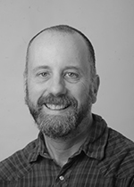
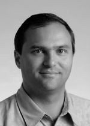

NAVIGATION
Patrick S. Li
Jonathan Bachrach
George Necula
Adam Izraelevitz
James Martin
Sean Lobo
Sponsors
Special Thanks
Patrick S. Li
DESIGNERPatrick is the designer and implementer of L.B. Stanza, and is currently a Ph.D. student at University of California, Berkeley, under the supervision of Jonathan Bachrach and George Necula. His academic interests are in programming language design, compiler implementation, software architecture, and artificial intelligence.
He received his M.A.Sc. from the University of Toronto working on computer vision and machine learning with his advisor Brendan Frey. He originally came from Calgary, Canada where he also received his B.Eng. in Electrical Engineering.
When he is not working on Stanza, he enjoys playing piano, watching cartoons, reading children's books (His Dark Materials is his favorite series), snowboarding, and playing Street Fighter with Luca and Emmy, his brother and sister. You can visit his personal website here.
Jonathan Bachrach
ADVISOR|  |
Jonathan Bachrach is an adjunct assistant professor at U.C. Berkeley where he teaches and researches software techniques to accelerate the design of electromechanical systems: changing the way we design, what components we use, and what machines we use to fabricate them with.
George Necula
CO-ADVISOR|  |
George is a Professor of Computer Science at University of California, Berkeley and a software engineer at Google Inc. He teaches software engineering, designs language extensions and tools for programmer productivity, and engineers tools to help programmers build and maintain high-quality software projects.
Adam Izraelevitz
APPLICATIONSAdam is a Ph.D. student in the ASPIRE Lab at the University of California, Berkeley. His interests are in hardware design methodologies, programming languages, and design space exploration of hardware designs. He received his B.S. in Electrical & Computer Engineering from Cornell University in 2013.
As one of the first users of Stanza, he designed and implemented FIRRTL, the new intermediate representation for Chisel, along with Patrick Li, and Jonathan Bachrach.
James Martin
CONTRIBUTORJames is a Ph.D. student in computer architecture under the supervision of John Wawrzynek. He did his undergraduate work at U.C. Berkeley and is interested in computer architecture, mmWave networks, and functional programming languages. He is the author of the Vim Stanza syntax highlighter.
Sean Lobo
CONTRIBUTORSean is currently an undergraduate student studying Electrical Engineering and Computer Science at the University of California, Berkeley. His work with Stanza includes writing performance benchmarks, offering feedback on error messages, and helping to develop the website. His interests are in algorithms, data structures, and their application to computational biology. He is currently exploring topics in Big Data, AI/Machine Learning, and the Internet of Things.
Outside of academics he often finds himself busy with tutoring, playing Super Smash Bros., watching TV shows and reading One Piece.
Sponsors
A substantial portion of Stanza was developed at and funded by the AspireLab at the University of California, Berkeley.
Stanza was partially funded by DARPA Award Number HR0011-12-2-0016, the Center for Future Architecture Research, a member of STAR-net, a Semiconductor Research Corporation program sponsored by MARCO and DARPA, and ASPIRE Lab industrial sponsors and affiliates Intel, Google, Huawei, Nokia, NVIDIA, Oracle, and Samsung. Any opinions, findings, conclusions, or recommendations in this research are solely those of the authors and does not necessarily reflect the position or the policy of the sponsors.
Special Thanks
Duncan Haldane, Jenny Huang, Johann Schleier-Smith, Marten Lohstroh, Austin Buchan, Danny Tang, Sumukh Sridhara, Ryan Orendorff, Howard Mao, Michael Driscoll, Cindy Rubio Gonzalez, David Biancolin, Colin Schmidt, Donggyu Kim, Richard Lin, Martin Maas, Chick Markley, Jim Lawson, Jack Koenig, Albert Magyar, and Palmer Dabbelt were attendees of the Stanza bootcamps and provided lots of useful early feedback.
Wontae Choi was very helpful during early discussions about Stanza's type system.
Emina Torlak shared her expertise on constraint solvers as applied to solving subtyping and unification equations.
Andy Keep offered very useful optimization advice for Stanza's compiler.
Oleg Kiselyov, Koushik Sen, and Ras Bodik gave feedback and advice on Stanza's coroutine system.
Kurt Keutzer supported Stanza in its very early stages.
Michael Driscoll for offering solid advice for marketing and promoting Stanza.
Yves Cloutier for being a patient early user and for generating the offline versions of the Stanza reference pages and tutorials.